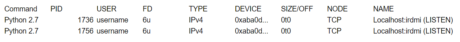

Troubleshooting Tips
Our main purpose here at Code Institute is to help you become good coders.
Our main purpose here at Code Institute is to help you become good coders.
Coding is the art of problem-solving using precise commands, which can be challenging. It’s almost like knowing the right magic incantations, or like getting your wishes fulfilled by a genie. And just like with genies, computers do what you told them, which is often not what you intended them to do (at least not on the first try).
So given this difficulty in structuring your ideas into precise commands, it’s an invaluable skill to be able to persevere and overcome those (very common) situations when your commands just don’t work they way you expected them to, and you feel as if the computer is conspiring against you. It isn’t. The computer doesn’t hate you, but it doesn’t like you either. Essentially, it’s just clay in your hand, and it is up to you to work hard to mould it into the shape you want it to be.
As with any other endeavor, coding can be challenging. Some argue that it’s harder than other arts, because coding isn’t limited in the way that physical creative pursuits are. Unlike with physical activities, such as sculpting, in which the material’s physical properties enforce constraints that limit and guide your work, coding is purely mental, and every common programming language allows you to solve any problem that can be solved. (If you’re curious about this, look up the concept of Turing Completeness). So the only general limit on your ability to write code to perform a task is to be able to clearly reason about that task.
In other words, you can create anything you can imagine, but only if you can imagine it clearly.
This is very hard. The main obstacle for coders is complexity. You can only achieve this by clarifying your thinking and making
commands as simple as possible (but no less!). And then, there is nothing to stop you, and you’ll be able to create anything you can put your mind to.
On your journey to becoming a good coder, you will struggle. Be strong, the only path forward is through this struggle. During your work you might feel that you are “stuck”. In general, being stuck means that you’ve been relying on a mental process that can take you no further, so to get “unstuck” you should take a step back and attempt to use a different process to advance. Below are suggestions for many such processes and some tools that you can use to try and get yourself unstuck.
.each() method that relies on Javascript’s
for loop, which relies on the browser’s javascript engine (usually written in C++), which relies on the operating system (which might be written in yet another language), which relies on assembly code, which relies on machine
code, which relies on the hardware, which in turn relies on the laws of physics as we know them.Math.max()” function to find the maximum number, you may find that it sometimes returns NaN, or -Infinity. If this doesn’t suit
the specific task you’re working on, you might prefer to write this functionality yourself.Validate your syntax - Browsers are infamous for accepting HTML and CSS that has invalid parts and doing whatever they can with the valid parts. So when you write incorrect markup or styling rules, instead of getting an error, you’ll just have some parts of your code not working, and you may not know why.
To avoid such syntax issues, it’s a best practice to run your HTML and CSS code through the official HTML validator and CSS validator (respectively).
A particular issue to look out for is to make sure that you don’t reuse the same id attribute on multiple elements. If you do, functions that rely on getting elements by their id would not work as expected.
Instead, use classes for styling multiple related elements. The only common validation issue that you may choose to ignore is the warning about an attribute not being valid.
Check your indentation - Even when your HTML is valid, you may have errors in your markup due to inconsistent indentation. Bad indentation may hide other issues and cause you lots of confusion when debugging. So the recommendation is to always be consistent in your indentation for each file, and use 2 spaces, 4 spaces or a tab to indent each inner HTML level, and likewise to indent CSS properties. Your future self will thank you.
Note that when using spaces for indentation, you should never actually add the spaces yourself, your editor should add them automatically when you press the TAB key. Also, your editor may have a tool to automatically re-indent your code, in Sublime for example, you can select the relevant lines in your file, hit Ctrl+Shift+P (or Cmd+Shift+P on a mac), search for “reindent” and click Enter.
Use the developer tools - When your markup or styling isn’t working as expected, use the Elements tab in the browser’s developer tools (available via the Inspect item in the right-click menu) to see whether all the elements appear in the DOM and are styled as you planned to.
You can also use the Elements tab to try out new css rules or disable existing ones - helping you to easily try out new changes, and pinpoint any issues.
Check your syntax - If your code doesn’t behave as you expected it to, run it through a validation tool such as JSHint.
A common issue that JSHint can help you with is missing semicolons. JavaScript has a “feature” called Automatic Semicolon Insertion (ASI), which defines how the JavaScript interpreter will automatically add missing semicolons. Unless you really know what you’re doing, opt to always terminate every statement with a semicolon, or explicitly continue it . A particular nasty case concerns “return” statements, where in some cases, ASI will put a semicolon at the end of the first line even if you intended the statement to continue into subsequent lines.
Check your indentation - Inconsistent indentation often leads to logic bugs. A commonly occurring bug is when a statement that you thought was part of a loop (based on the indentation) is actually outside of it (or vice versa). Use a common indentation for each file, with either 4 spaces, or a tab for each inner level.
Check the console for errors - The developer tools console in the browser will show you any JavaScript errors in your code or missing resources. Make sure to take a look at it whenever you suspect an error.
If you are using external js libraries or frameworks (e.g. jQuery) and encounter unclear errors, switch to the unminified version to get better error messages. Often this just means using the same library file names, but without “.min”.
Debug your code - When your code works “well”, but just doesn’t do what you intended it to, debug it by printing the values of variables using console.log statements (which then show up in the developer tools console), or in more complicated cases, using the Source tab in the developer tools to trace your code step-by-step.
Check your syntax - Use Python’s pep8 tool (either through the command line, or via the online version) to help you find potential syntax problems, and otherwise improve your code’s style.
One of the benefits of Python, is that due to its enforced indentation, you cannot have logic bugs due to poor indentation. So that’s a welcome safety net. But you still should strive for consistent indentation for better legibility; the Python standard is to always use 4 spaces (and most editors will do so automatically when you press TAB).
Carefully read exception messages - When you get an error, read the exception message carefully - most of Python’s messages are quite good, and will often pinpoint the exact line where you’d need to fix the error.
Debug your code - When your code works “well”, but just doesn’t do what you intended it to, debug it by printing the values of variables using print statements, or, in more complicated cases, use either pdb or a debugger in your IDE to trace your code step-by-step and find the problem.
Many programming tools don’t have graphical interfaces, and instead rely on typing textual commands on the command line, through interacting with a program known as a “shell”. The most commonly used shell by programmers is Bash (Bourne-again Shell), which we recommend in this class. Most of the advice below would is relevant for other shells as well (e.g. “zsh”).
Another important term you should be familiar with is the “terminal” - the window which provides you with access to the shell. Historically, you would have a full computer working as the terminal, but in modern times we use terminal emulators which are just a single program on your computer that emulates a terminal.
There are many different terminal programs that you can use, which differ based on your operating system; the only difference between them is in various additional graphical add-ons and shortcuts that provide ease of use. The actual functionality of the command line is the same for all terminals and only depends on the shell. Two particular terminal emulator program that some advanced students might enjoy are ConEMU on Windows and Terminator on Linux.
Check your spelling - The most common issue for beginners to the command line is misspelled commands. Note that the way the command line works is that the first word you put on the command line is the command name, and everything else after the space are parameters passed to that command. So whenever you get the error “command not found", make sure that you have no typos in your command.
Spelling errors in the parameters are also common, but would cause different error messages. Whenever you get any weird error, first check your spelling.
Give particular attention to capitalisation (the command line is case-sensitive), and to the difference between capital “I” and lowercase “l”.
When typing long commands or file names, use the TAB key to automatically complete the typing for you (whenever there is only one way to complete it); doing so will save you from many typos.
Check that you’re in the right directory - Most commands depend on the directory you’re currently in. Make sure that you’re in the right directory by running “pwd” (Print Working Directory), and make sure that
any other files that you expect are there as well, by running “ls” (list).
Use the built-in help functionality - If you’re not sure how any specific command works, try its help functionality, for most commands, just add “--help” at the end.
To learn about the main commands, see the Wikipedia page on Unix Commands, and if you’re on Linux or Mac, you can also use the “man” command to open the relevant manual page, (e.g. “man ls” to
learn about the “ls” command). Manual pages open in the “less” program - see details below.
Commands that have subcommands, such as Git which has “git add”, “git commit” etc., and also generally have a “help” subcommand. So, for example, you can use “git help add”
to learn about the “add” subcommand. Though, specifically in the case of Git, you can get the same information through running “man git-add”.
If you’re stuck in an editor, don’t panic -
less” is a pager program that may automatically open on the command line whenever you ask to read a very long file or output (e.g. when using “git log” on a repository
with lots of history).
You can use the arrow keys or the page up/down keys to scroll around in Less. You can also use the “/” key to search for a specific part of the text and the “n” key to go to the next match.
Use the “q” key to quit Less.
Vim - “vim” (VI improved) is the default editor used in Bash, and though it’s very powerful, it’s possibly the hardest editor for beginners to learn. The most common reason students get stuck in vim is when
they use “git commit” without the “-m” parameter, so Vim opens up for them to add a message manually.
Vim is a mode-based editor that has several distinct modes of operation. Vim always starts in the “normal mode” where you can give it commands to change the text, but cannot edit it directly. Click “i” to go into the “insert mode” and edit the text directly, and then click the Escape key to go back to the normal mode.
When you’re done, click Shift+Z+Z to save the text and exit. Or, type “:q!” to quit without saving.
If you plan to spend a lot of time in the command line, it might be worth your while to use the “vimtutor” command to learn a bit about how Vim works, and there are also many good learning resources online.
If you’re stuck in a long operation, don’t panic - If you started a command that seems to run forever, or one that is actually intended to run forever until interrupted (like “http-server”),
you can usually stop it by clicking Ctrl+C, which sends it an interrupt signal, that makes it terminate (except if the program is built to actively resist it).
Alternatively, in bash (but not in cmd), you can also click Ctrl+Z to temporarily stop the program, and then run “fg” to resume it in the foreground, or “bg” to resume it in the background, and
thus letting you type in other commands in the foreground (though in most cases, when you want to run multiple command line programs, it’s easier to just open a new terminal). If clicking Ctrl+C doesn’t terminate the
program, you can also click Ctrl+Z to stop the program and then run “kill -9 %1” to forcefully kill it (“-9” signifies the kill signal, and “%1” points to the first program currently running in the shell).
Or, alternatively, you can of course also just close the terminal window.
If you cannot launch a server since the port is already in use - When using frameworks like Django and Flask, you may come across the following warning: ‘Error: That port is already in use’. This means that you are attempting to run two separate server processes (or more simply, instances of your code) on the same port (which isn’t allowed).
This is relatively straightforward to handle if you know what the other process is and can either go back to using that one, or kill it manually. It’s a little trickier if you don’t know what that other running process is.
Fear not! If you’re using Mac or Linux, you can use the following command to find this out:
“lsof -i tcp:”
By default, Django and Flask have their own distinct port numbers i.e. 8000 and 5000 respectively.
So when you experience this error on Django, the command you would enter is:
“lsof -i tcp:8000”
This command should return an output similar to this:
The important piece of info to note in this table is the PID (Process Identifier). You will use the PID when you run the kill command. For example to kill the first process we would run the command “kill -9 1736”.
You can repeat this kill command with each PID to kill all browsers to clear the port. Alternatively if you know the PID for the single process you want to run, you can keep this one running - and kill off every other
process to fix the error.
And if you’re on Windows, the procedure is similar, but the tools are different. Launch an administrator cmd shell by right-clicking the Command Prompt icon in the Start menu and choosing "Run as administrator", and then
use the following commands: “netstat -o -b -n” to list the different processes, and “taskkill /f /pid 1736” to kill the process you found.
If none of the above helped you solve your issue, write down your problem and everything that you tried, and then ask another person. In any case, spend some time to write down your question in detail, what you did to address it so far and include your code (either a specific snippet, or a link to the full project on GitHub).
We’ll end this section with two perspectives on asking others for help:
No one can learn for you - Real learning requires that you confront your knowledge gaps, and that’s something you have to embark on yourself. You have to be able to look inside yourself and say something like:
“I don’t understand this. I expected it to be X, but from my observation, it seems that it’s actually Y. I need to reconcile my understanding of the world with this new observation.”
That’s the perhaps the hardest part of learning, and something that you can’t really avoid. After you’ve done that and recognised what is that you don’t know (or thought you knew, but discovered that it just isn’t so), you should then seek to acquire more information, from other people, or written resources. Some students have a tendency to try to skip on that introspective stage, and miss out on a lot of learning. Just asking others for more information or solutions to specific problems would not help you learn, unless you put the time into organising your knowledge and strive for real understanding.
Learning is a social experience - The main reason for many of us to learn new things is to be able to join a new social group or improve our standing within it. We choose to learn because we want to know the same things that others that we look up to know. And this is especially true when learning to become a coder - a lucrative profession, which is quite meritocratic; you need to show your understanding of many topics to be able to become a strong developer, and land a good job.
On the other hand, coding can also sometimes be a very lonely and frustrating endeavour. So getting in touch with other people and asking for help and collaboration is something that we all occasionally want to do, to get reassurance about our learning path, compare ourselves to others, regain confidence (since everyone else is also constantly learning new things), enforce that feeling of being part of a community and just feel less alone when walking this difficult path.
Sometimes, when you think you just want to solve a specific problem, what you actually want deeper down is to talk about it with others and collaborate with them.
The community on Slack can be very helpful, and in
some cases you’ll find that just sharing your issues with others, and taking part in the community, will help you gain the energy and motivation to persevere on the journey.
We believe that both of these perspectives hold much truth in them. So let’s sum up with this advice - strive to learn and accomplish as much as you can yourself, but don’t forget to rely on the community of learners and practitioners when you need them. And help others when you can, because at the end of the day, we all benefit from better learning and a stronger community.
These steps will help others better be able to understand the problem that you’re having to know how to best help you. Imagine someone was asking you the same question you’re about to ask them, what information would you need to help them solve the problem?
A good problem statement should include what you were doing when it happened, the technology you’re using, and the steps someone can take to recreate what is puzzling you. Additionally, you should present an initial hypothesis of what you think is the cause of the problem. This hypothesis will change as you gather more information and will ultimately help you better understand and solve the problem. Tips for developing your hypothesis are discussed later in this lesson.
When asking a question, it’s important to include any relevant information to let others know what part of the program you are currently working on. This may include a copy of the Module > Section > Lesson > Unit you are currently working on. You'll find the name of the unit you are working at the top of your browser window (example highlighted below). Please copy the entire line (from course to unit) and paste it in here.
If you are working on a challenge, you should include the challenge instructions to help others assist you more easily. We suggest that you also include any other relevant information about the lesson or challenge that you’re currently working on should be included, such as the unit, and a link to the particular code that is giving you trouble. These links can be added in the support tab when you submit a tutor support request.
If it is a technical question regarding your work on a Milestone project, please include the language and framework (if applicable) that you’re using and any background context or user stories that may be relevant to someone else’s understanding your problem.
As a rule of thumb, don’t assume that the reader has prior background knowledge (apart from familiarity with the language or framework) on the problem you’re having.
When asking a question, please describe in detail what you’d like the code to do or how you would like the end result to look.
In case of an error, or any other unexpected result, please include any information on what you’re receiving. You may want to share a copy of the full error as it appears in the console, terminal window or Heroku logs. You may also want to share a screenshot of what your output looks like vs. what the expected output is. If it’s a function output, please include the result of what the function is currently returning, even if there’s no error. A picture is worth a thousand words, so free to add a screenshot when inspecting your code using Chrome Dev Tools. In Chrome, you can open Inspect mode by right-clicking on the page and select ‘Inspect’.
Keep in mind that in order for a reader to help you reach a solution, it’s imperative that they understand the problem. The most effective way of doing this is to use a ‘show, don’t tell’ approach; in the coding world, this approach involves helping your readers reproduce the problem.
One simple but effective way of ‘showing’ the problem is to make the most of your ability to share code snippets, links to your code, file attachments, images, and videos. Consider if a screenshot of your code output or a screencast of you debugging your code may help your reader.
Almost every coding problem statement would benefit from including code. We strongly recommend including code that directly relates to your problem in a code snippet and then adding a link to your entire file or project in a GitHub repo.
This portion should consist of anything you’ve tried to fix the problem so far. If you haven’t had much success trying to troubleshoot the problem yourself, check out the troubleshooting tips above to walk you through this process. Here you will find suggestions on how to use Chrome Developer tools, validators, and advice on debugging Python and JavaScript.
The ability to localize the problem is a major component of debugging. The more information that you can give someone about where you think the problem is coming from coming from, the better. It not only makes the root of the problem easier to identify for the person helping you, but it also helps you understand your problem better. One technique to use is developing a hypothesis to help you and others identify the problem and work towards a solution.
Forming a hypothesis:
“I believe that this capability, is resulting in this outcome, due to this observation. I will know the code is running as intended when expected result.”
The capability refers to a feature, a function, or a bit of code that you think may be resulting in an unexpected outcome. The outcome is what you observe happening. It can be an error message, unexpected functionality, or lack of functionality. The observation should be why you think the result is happening. This observation could be from using console.log or print statements in JavaScript or Python, or it could be an observation that you’ve made in HTML/CSS in developer tools.
The expected result is what you’re trying to achieve with your code. It should be the description of the indication that you know your code is working correctly, such as a certain output, feature, or look. Try to construct the hypothesis at the smallest level, especially if this functionality is part of a larger feature.
Have a look at a few example questions to help you formulate a good question.
Bad: My images aren’t showing up.
Good: Hello, I’m trying to get my images to appear in on my HTML page, but they aren’t appearing. I have uploaded my images to my Cloud 9 workspace into a separate folder for images. A link to each image
is included in the image tag in the following format <img src="images/myimage.jpg">. In the console, it says that the image is not found (404 error) - so perhaps I have a file-path issue? I have cleared
my cache, but yet it’s still not showing up.
Bad: I’m having issues deploying my app.
Good: Good morning! I’m trying to deploy my Django app to Heroku, but I’m getting a 404 error on deployment instead of my app’s homepage. In the build log, it says that my build was successful and the app was launched. I’ve tried restarting all dynos and making sure the requirements.txt was updated, but that hasn’t fixed it.
Bad: If else issue.
Good: Hi, I’m working on the FizzBuzz challenge and while I don’t have any syntax errors, the function is only returning Fizz when a number is divisible by 3, and the number even if it’s divisible by 5 or 3 and 5. It seems that the first if condition and the else condition are the only ones that are working. I’ve tried re-ordering the conditions, but with no luck.
For each of the examples above, the question would be even more useful if it includes all the relevant code.
No one knows the code you’ve written like you do! The more detail you give those you’re asking, the better they can help you.
If this is a technical question about your Milestone project, those helping you (likely) haven’t seen your code before. Explaining it can actually help you better understand your own code, the problem that you’re having, and ultimately help them better figure out what or where the problem may be. And after creating these explanations, you may want to add them as comments to your code too.
If you’re asking a question on Slack, make sure you’re asking it in the correct channel. You should choose the channel based on the module title that you’re currently working on or where the lesson or challenge is coming from. You’ll be able to get feedback quicker, and it keeps the Slack channels tidy for other users.
At certain points, you may find that you are responding to questions rather than posting them. This is something we strongly encourage in Slack as the benefits are twofold:
While attempting to help another student you may find that your fellow student’s question is lacking key information. Feel to share or refer to this guide when asking the student to provide additional information.